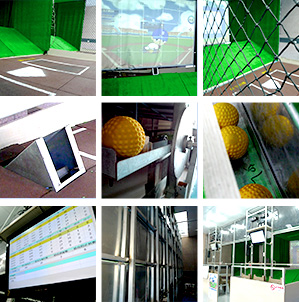

劃時代 高體感棒球打擊練習機
Superun 全壘打歷經多年研發、實驗，2011年成功首創全球專利型高體感棒球打擊機，互動式機台即時分析打擊狀況，人性化設計，詳細的數據表，比照球速、打擊角度、強度等元素，幫助您徹底了解自己，您不用再使用傳統九宮格、高危險地機械手臂球道，科技化人性介面搭配詳細的打擊記錄表，幫助球員了解自己調整到最佳打擊狀態，改善傳統練習機缺乏揮臂的功能，提升超快速球的打擊率，成就您的棒球傳奇。

機台規格：高4M、寬4M、長8M
投影畫面：寬度4米、高度3米
功能：
- 計算打擊命中率
- 練習全壘打模式
- 計算打擊總分
- 打擊競賽排名
- 即時連線競賽
- 練習指定格打擊
- 計算打擊角度、力道
- 模擬投手投球實況
遊戲計分方式：根據擊球角度、方向、強度分析球的落點，並將飛行距離轉換成分數加總。
EASY RUN輕鬆打出全壘打
專利型高體感打擊機
Superun全壘打除為您推出全球專利型高體感打擊機外，也要教您輕鬆打出「紅不讓」！！相信很你一定聽過「野球」，大部分的人都知道這是棒球的日式名稱，回溯到台灣棒球史的那一頁，1895年由日本傳至台灣，許多台灣人都誤以為棒球是日本所發明，事實上，早在幾百年前棒球出現於英國，並舉辦了許多賽事，棒球自1904年加入奧運比賽項目，後因全球棒球風氣不盛，能參賽的國家越來越少，2012年起被移除奧運比賽項目。
各類型棒球隊蓬勃發展，孕育著台灣下一個棒球之光。
依據不同形式的棒球賽事，分有硬式、準硬式、軟式棒球形式，現世界主要職業賽事都是硬式棒球，而準硬式、軟式棒球為青少棒、青棒、少棒所用居多；球棒類型分有木棒、鋁棒、複合球棒，為了安全國際棒球總會選用木棒作為賽事指定使用，鋁棒只有在部分賽事使用。
棒球比賽的形式，皆在扇型球場進行輪流攻守的競賽，每隊人數為9人，隊員分配如下：投手負責投球，捕手、一壘手負責接球、防守本壘和指揮全場，二壘手負責防守一壘，三壘手負責防守一、二壘之間，游擊手負責防守三壘，內野手負責於二、三壘間機動防守； 外野手則分為左外野手、中外野手和右外野手。
國內棒球賽事，依據選手年齡不同分為三級棒球，少棒為14歲以下，青少棒為16歲以下，青棒為18歲以下，而成棒分有業餘、職業棒球兩種，國內棒球風氣之盛，各類型棒球隊蓬勃發展，孕育著台灣下一個棒球之光。